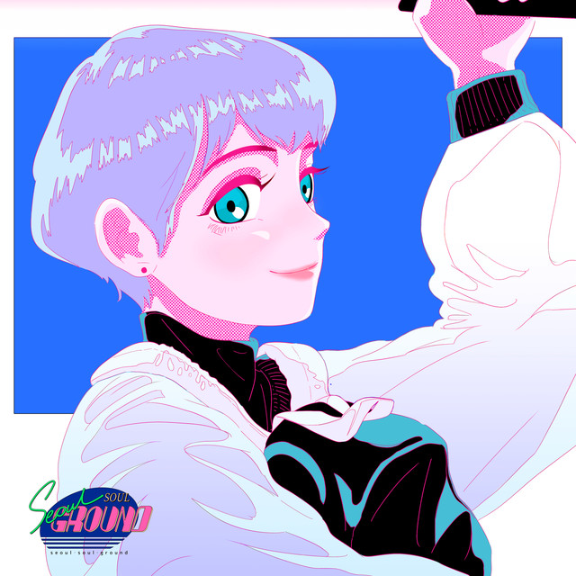
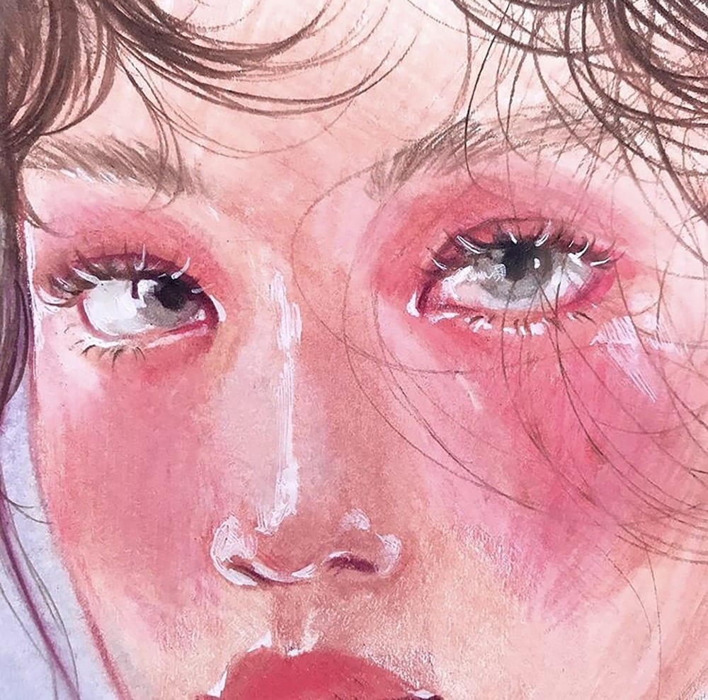

I've been struggling to find good, new music. However, it's honestly not difficult to find decent content, especially
since I listen to a bunch of playlists on YouTube. They're usually titled along the lines of "K-Indie/Hip-hop/R&B".
There could be 13 songs in the entire video, but I would always find a gem in my suggested videos.
Yesterday, I was jamming out to this new song and also low-key set a video of myself jamming to it as my profile video
on social media. Endless Summer is such a feel-good song with a beautiful instrumental. The vocals are unique,
and I will simple say: CIKI's vocals are actually my favorite in the K-Indie genre.
"I want you to come before bed
I was scared so I actually wanted to quit
What we wrote on the bridge above the Han River
Even if it's crazy, you have to live to the end"
| 1 |
Jeebanoff is ranked first because I'd heard of him first with his song, Truth. It basically |
| 2 |

CIKI is ranked second because I've only recently found his works, like Endless Summer and Syndrome. The instrumentals are pretty and his vocals really suit this genre- it kinda reminds me of singing in italics, but less cringey. I also especially like his feature on Instant Date by Kumira. His songs are perfect for chill vlogs. |
| 3 |

Seo Actor is last, but he's definitely not the worst. I like the melancholic tone he sets in his works- it contrasts with CIKI. However, in my opinion, his content can be hit or miss. Some songs I like of Seo Actor are August and I'll Be There. Although Seo Actor is ranked last, I still look forward to his works- I hope he releases an album like CIKI has! |